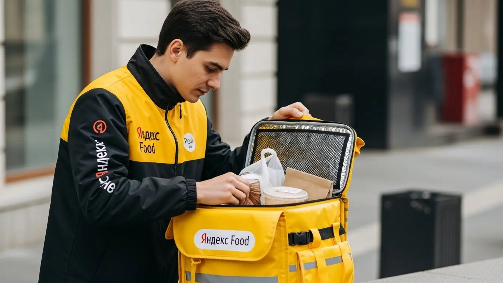
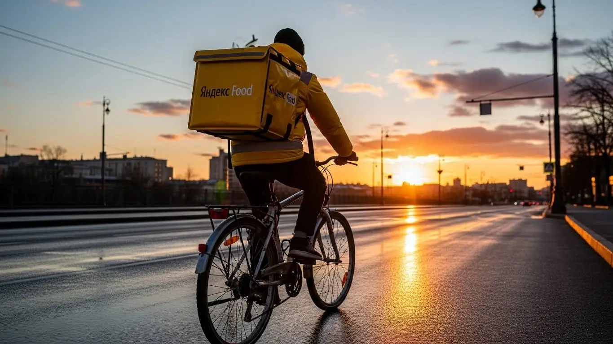

Работа курьером Яндекс Еда в Дубне 2025-2026: доход и условия

- Работа курьером Яндекс Еды в Дубне: для кого эта вакансия и что вы получите
- Сколько вы будете зарабатывать курьером в Дубне: калькулятор дохода и разбор выплат
- Реальный заработок курьера в Дубне: смены и месячный доход
- График работы и форматы занятости
- Требования к кандидату и документы
- Самозанятость, налоги и юридическая чистота
- Пошаговое оформление и первый выход на линию в Дубне
- Пешком, на вело или на авто: что выгоднее в Дубне
- Районы, маршруты и «топовые» зоны заказов в Дубне
- Безопасность, страховка, штрафы и оплата простоя
- Плюсы и возможные минусы работы курьером в Дубне
- Реальные истории и отзывы курьеров из Дубны
- Ответы на главные вопросы о работе курьером Яндекс Еды в Дубне
- Короткие ответы на главные вопросы
- Итоги и твой следующий шаг в Дубне
Все города
Думаешь, работа курьером Яндекс Еда в Дубне — это легкие деньги на самокате под летним солнцем? А потом видишь пробки на проспекте Боголюбова в час пик, «убиваешь» подвеску на дорогах левого берега и понимаешь, что доход едва покрывает ремонт и бензин? Если тебя терзают сомнения насчет реального заработка, штрафов и того, стоит ли вообще в это ввязываться, — ты по адресу. Здесь не будет рекламных сказок, только голая правда о работе в нашем наукограде.
Потому что 9 из 10 новичков в Дубне выгорают в первый же месяц. Они не считают реальные расходы, не понимают, как работает приоритет в приложении, и катаются по пустым спальникам типа Чёрной речки, пока заказы кипят в институтской части. В итоге — разочарование и миф о том, что «в Дубне не заработать». Это не так, если знать правила игры. Кстати, чтобы сразу увидеть актуальные условия, посмотреть калькулятор дохода и заполнить анкету, можно перейти на официальную страницу: работа курьером Яндекс Еда в Дубне. А я тебе сейчас всё подробно расскажу.
В этом гиде мы разберём, на чём лучше работать в Дубне: на своих двоих, на велике или на машине, и что выгоднее с учётом наших расстояний и моста. Посчитаем реальный доход за смену, вычитая бензин, амортизацию и налог самозанятого. Я покажу на карте, в каких районах — от Большой Волги до левобережья — самые «жирные» заказы и в какое время. И, конечно, расскажу про штрафы, как не нарваться на них, и что делать, если поддержка Яндекса молчит.
Меня зовут Алексей. Я сам откатал не одну тысячу километров по Дубне с желтым рюкзаком, а сейчас у меня свой небольшой таксопарк-партнёр. Моя задача — дать тебе честную инструкцию, а не заманить в сервис красивыми обещаниями. Это разговор по-братски, от курьера — курьеру. Так что давай по порядку, сейчас всё разложу по полочкам.
Но сначала — короткий гид по главным темам статьи, чтобы ты сразу нашёл то, что волнует больше всего.
Что ты точно узнаешь из этого разбора
В этой статье ты ТОЧНО узнаешь:
- Сколько реально можно заработать в Дубне за смену и за месяц, если работать на полную или подрабатывать?
- На чём выгоднее работать именно в Дубне: пешком, на велосипеде или на авто, и в чём разница в доходе?
- В каких районах Дубны — от Большой Волги до ОЭЗ — больше всего заказов и выше коэффициенты?
- Как ловить пиковые часы и «жирные» заказы в плохую погоду, чтобы зарабатывать больше, а работать меньше?
- За что на самом деле снижают рейтинг и как не нарваться на штрафы, чтобы не терять заказы?
- Как быстро оформиться самозанятым и выйти на первый заказ уже сегодня, даже если нет опыта?
А если тебе некогда читать всю статью — переходи сразу к заключению, где ты найдёшь короткие ответы на все эти вопросы и указания, в каких разделах искать подробности.
А вот ключевые цифры и условия работы в Дубне в одной картинке.
Работа курьером в Дубне: ключевые цифры
Работа курьером Яндекс Еды в Дубне: для кого эта вакансия и что вы получите
Давай начистоту: работа курьером — это не для всех, но для многих в Дубне она может стать отличным решением. Если ты ищешь способ заработать без начальника над душой, сложного графика и строгих требований к опыту, то ты по адресу. Это возможность получить живые деньги здесь и сейчас, а не через месяц.
Я сам начинал с доставок и знаю, что это такое. Поэтому объясню всё как есть, без прикрас, чтобы ты понял, подходит ли тебе такая работа и какие реальные деньги она может принести именно в нашем городе.
Кому подойдёт эта работа в Дубне
Эта вакансия, по сути, универсальна. В первую очередь, она идеально подходит студентам, особенно из университета «Дубна». Можно легко совмещать с учёбой: вышел на пару часов после пар, доставил несколько заказов в районе Института и получил деньги на карманные расходы. График полностью гибкий, так что сессии и зачётам ничего не помешает.
Во-вторых, это отличный вариант для тех, у кого нет опыта работы. Тебе не нужно проходить долгие собеседования и стажировки. Всё просто: скачал приложение, прошёл короткое онлайн-обучение, и ты готов к работе. Также это хороший старт для тех, кто ищет подработку к основной зарплате. Можно выходить на смены по вечерам или только на выходных, чтобы закрыть кредит или накопить на что-то важное. И конечно, это работа для водителей, которые хотят, чтобы их автомобиль приносил дополнительный доход, а не просто стоял под окнами.
Главные преимущества для жителей районов Большая Волга, Институтская часть, Левый берег
Главный плюс работы в Дубне — возможность работать буквально в своём дворе. Тебе не нужно тратить время и деньги на дорогу до офиса. Живёшь на Большой Волге? Отлично, выбирай слоты в этой зоне и доставляй заказы из местных кафе и магазинов по проспекту Боголюбова.
Если твой дом в Институтской части, ты можешь работать в радиусе пары километров, обслуживая заказы из центра. А для жителей Левого берега («Тридцатки») есть свои зоны, и не придётся постоянно мотаться через мост. Приложение «Яндекс Про» позволяет выбирать конкретные районы, где ты хочешь работать. Это экономит и время, и силы, особенно если ты пеший курьер или на велосипеде.
Краткое обещание по доходу и условиям
Если говорить о деньгах, то в Дубне реальный заработок курьера зависит от тебя. При частичной занятости, выходя на 3–4 часа в день, можно спокойно делать 1500–2500 рублей за смену. Если же работать полный день, то доход может достигать 3500–4500 рублей и выше, особенно у автокурьеров в пиковые часы. В месяц при полной занятости выходит в среднем от 50 000 до 85 000 рублей.
Ключевые условия работы просты и прозрачны. Во-первых, ежедневные выплаты: деньги приходят на карту сразу, не нужно ждать конца месяца. Во-вторых, свободный график: ты сам решаешь, когда и сколько работать. В-третьих, начать можно без опыта: всему научат в процессе. Важно, что всё официально — через оформление самозанятости, что гарантирует легальность дохода. Это не обещания из рекламного буклета, а реальные условия, по которым работают сотни курьеров в нашем городе.
Вот тебе реальный кейс. Парень, студент-физик из «Дубны», живёт в общежитии в Институтской части. Он выходит на велосипеде на 3-4 часа почти каждый вечер. Катается по своему району, знает все короткие пути. За неделю у него набегает 8-10 тысяч рублей чистыми. Этих денег ему хватает на жизнь и развлечения, при этом учёба не страдает.
В общем, работа курьером в Дубне — это гибкий и доступный способ заработка. Главное — работать можно рядом с домом и получать деньги сразу. Мой совет: начни со своего района, чтобы освоиться, а потом уже пробуй выезжать в другие зоны, где выше спрос.
Сколько вы будете зарабатывать курьером в Дубне: калькулятор дохода и разбор выплат
Самый главный вопрос, который всех волнует: «Сколько я буду зарабатывать?». Давай разберёмся в этом подробно, чтобы у тебя не было иллюзий и ты чётко понимал, из чего складывается твой доход. Зарплата курьера — это не фиксированный оклад, а результат твоей активности и умения выбирать правильное время и место для работы.
Система оплаты в Яндекс Еде прозрачна. Все начисления ты видишь в реальном времени в приложении «Яндекс Про». Никаких скрытых комиссий или непонятных вычетов. Всё, что заработал, — твоё, за вычетом небольшого налога как самозанятого.
Из чего складывается доход курьера
Твой итоговый заработок за смену — это сумма нескольких составляющих. Важно понимать каждую из них.
- Оплата за заказ. Это базовая стоимость за то, что ты забираешь заказ из ресторана или магазина и доставляешь его клиенту.
- Доплата за расстояние. Чем дальше ехать или идти до клиента, тем больше доплата. Расстояние считается по оптимальному маршруту, который строит приложение.
- Повышающие коэффициенты. В часы пик (обед, ужин), в плохую погоду (дождь, снег) или в зонах с высоким спросом включаются множители. Стоимость заказа может увеличиться в 1.5, 2, а то и в 3 раза. Это твой главный инструмент для увеличения дохода.
- Бонусы. Сервис часто предлагает персональные цели. Например, выполни 15 заказов за день и получи бонус 500 рублей. Это отличная мотивация.
- Чаевые. Все чаевые, которые оставляют клиенты через приложение, полностью твои. Сервис не берёт с них никакой комиссии.
- Оплата простоя. Это важное преимущество. Если ты вышел на плановый слот, а заказов временно нет, сервис начисляет минимальную гарантированную оплату за час. Ты не останешься с нулём, даже если спрос временно упадёт.
Как пользоваться калькулятором дохода
Чтобы прикинуть свой возможный заработок, на странице есть специальный калькулятор. Пользоваться им очень просто. Сначала выбери свой город — Дубна. Затем укажи, как планируешь доставлять: пешком, на велосипеде или на автомобиле.
Далее, с помощью ползунков, установи примерное количество часов, которое ты готов работать в день, и количество рабочих дней в неделю. Калькулятор мгновенно покажет тебе примерный диапазон твоего дохода за день и за месяц. Конечно, это прогноз, но он основан на реальной статистике по нашему городу и помогает сориентироваться.
Прикинь свой доход курьера в Дубне
8 часов
5 дней
Примерный доход в месяц:
72 000 ₽
* Расчёт основан на средней ставке ~450 ₽/час для Дубны. Реальный доход зависит от спроса, бонусов, погоды и вашего графика.
Чтобы узнать подробнее про актуальные условия, посмотреть полный FAQ и заполнить анкету, переходи на официальную страницу: работа курьером Яндекс Еда в твоём городе. Там собрана вся информация для старта.
Примеры расчёта для пешего, вело- и авто‑курьера в Дубне
Давай посмотрим на конкретных примерах, сколько можно заработать в Дубне.
- Пеший курьер. Допустим, ты студент и работаешь по 4 часа вечером в будни в Институтской части. В этой зоне много кафе и плотная застройка. За смену ты сможешь выполнить 6–8 заказов. Твой средний доход составит 1200–1800 рублей за вечер.
- Велокурьер. Как курьер на велосипеде, ты работаешь по 6–8 часов в выходные, катаясь между Большой Волгой и Левым берегом. Ты быстрее пешего курьера, можешь брать больше заказов и покрывать большие расстояния. Твой дневной заработок может составить 2800–4000 рублей.
- Автокурьер. Ты выходишь на линию на своей машине в пятницу вечером и в субботу, когда спрос максимальный. Как курьер на автомобиле, ты можешь брать дальние заказы по всему городу и даже в ближайшие СНТ. В плохую погоду твой доход резко возрастает за счёт коэффициентов. За 8-10 часов работы можно заработать 4500–6000 рублей и больше.
Вот тебе история из моего таксопарка. Один из водителей, мужчина лет 50, раньше просто таксовал. Потом решил попробовать доставку. Теперь в сильный дождь или снегопад он отключает тариф такси и работает только как автокурьер. Говорит, что в такие дни заказов море, коэффициенты высокие, а клиенты щедрее на чаевые. За один такой «погодный» день он делает столько же, сколько за два обычных дня в такси.
В итоге, твой заработок напрямую зависит от выбранной стратегии. Не бойся экспериментировать: пробуй разные районы, время и виды транспорта. Используй калькулятор для планирования, но помни, что реальные цифры всегда в твоих руках и ногах.
Реальный заработок курьера в Дубне: смены и месячный доход
Давай к главному — к деньгам. Без красивых обещаний, только цифры и факты из практики по Дубне. Доход курьера в Яндекс Еде — это не фиксированный оклад, а результат твоей скорости, смекалки и умения быть в нужном месте в нужное время. Сумма в конце дня напрямую зависит от тебя, и это главный плюс.
В Дубне город компактный, расстояния небольшие, что хорошо для пеших и велокурьеров. Но наличие двух частей города, разделенных Волгой, создаёт свои особенности. Автокурьеры здесь тоже в выигрыше, особенно на дальних заказах или при работе с крупными магазинами. В общем, заработать можно на любом транспорте, если понимать местную специфику.

Диапазон дохода для подработки и полной занятости
Если ты ищешь подработку на несколько часов в день, чтобы закрыть кредит или накопить на что-то, цифры будут одни. Если же готов работать полный день, как на основной работе, — совсем другие. Вот реальные вилки дохода для Дубны, из которых можно исходить.
Подработка (2–4 часа в день, 3–4 дня в неделю):
- Пеший курьер: Идеально для центральной, Институтской части. За короткую смену в 3-4 часа можно заработать 800–1500 рублей. В месяц это составляет порядка 15 000 – 25 000 рублей.
- Велокурьер: Ты мобильнее, можешь охватить и Левый берег, и часть Большой Волги. За 3-4 часа твой доход составит 1000–1800 рублей. В месяц это уже 20 000 – 35 000 рублей.
- Автокурьер: Выгодно брать вечерние слоты, когда много заказов из гипермаркетов. За 3-4 часа можно заработать 1500–2500 рублей «грязными». За вычетом бензина в месяц получается 25 000 – 40 000 рублей дополнительного дохода.
Полная занятость (8–10 часов в день, 5–6 дней в неделю):
- Пеший курьер: За полный день в хорошей зоне можно заработать 2000–3000 рублей. В месяц это превращается в 45 000 – 65 000 рублей.
- Велокурьер: Самый сбалансированный вариант для Дубны. Дневной заработок — 2500–4000 рублей. Месячный доход стабильно держится в районе 55 000 – 80 000 рублей.
- Автокурьер: Максимальный потенциал по доходу. За день можно привезти 3500–5500 рублей. В месяц это 75 000 – 110 000 рублей до вычета расходов на топливо и обслуживание машины.
Как район, время суток и погода влияют на доход
Заработок — величина непостоянная. Вчера ты мог заработать 2000 рублей за 8 часов, а сегодня — 4000 за то же время. Всё дело в трёх факторах: где, когда и в какую погоду ты работаешь. Поняв эту механику, ты сможешь управлять своим доходом.
Самые «хлебные» места в Дубне — это Институтская часть с её кафе и ресторанами и район Большой Волги, где много жилых домов и магазинов. Пиковое время — это обеды с 12:00 до 14:00 и, конечно, вечера, особенно с 18:00 до 21:00. В это время в приложении «Яндекс Про» карта спроса окрашивается в фиолетовый цвет. Это значит, что действует повышающий коэффициент, и за каждый заказ ты получаешь больше денег, плюс возможны дополнительные бонусы. Пятница, суббота и воскресенье — это стабильно дни высокого спроса.
Плохая погода — твой лучший друг в работе курьером. Как только начинается дождь, сильный снег или жара, количество заказов резко растёт, а число курьеров на линии падает. Коэффициенты взлетают до небес. К тому же, в ненастье люди охотнее оставляют чаевые — просто из благодарности, что ты доставил им еду в тепле и сухости, пока сам мокнешь под дождём.
Советы по увеличению заработка от опытных курьеров
Чтобы увеличить свой заработок, не обязательно работать дольше. Нужно работать умнее. Вот несколько проверенных советов, которые помогут тебе выжимать максимум из каждой смены без лишних переработок.
Во-первых, планируй свои выходы. Заранее бронируй в приложении плановые слоты на самое выгодное время — вечера и выходные. Это не только гарантирует тебе работу в пик спроса, но и даёт приоритет при распределении заказов. Во-вторых, изучи свой район. Не гоняйся за «фиолетовыми» зонами на другом конце города. Лучше досконально знать одну-две локации, все дворы, подъезды и короткие пути. Это сэкономит тебе минуты на каждом заказе, а за день эти минуты сложатся в часы и дополнительные деньги.
Если есть возможность, сочетай транспорт. Например, в хорошую погоду для заказов по центру используй велосипед — это быстро и без затрат на бензин. А когда погода портится или нужно везти объёмный заказ с Правого берега на Левый, пересаживайся на машину. Такая гибкость позволяет всегда оставаться в выигрыше и не зависеть от внешних обстоятельств.
У меня парень работал, назовём его Игорь. Начинал как пеший курьер в районе Черной речки, его зарплата была по 2000-2200 в день. Вроде неплохо, но уставал сильно. Я ему посоветовал купить недорогой велосипед. Он вложился, и его дневной доход сразу подскочил до 3000-3500 рублей, потому что он стал успевать делать больше заказов и брать доставки на большее расстояние. А когда в один дождливый субботний вечер он вышел на 8-часовой слот и привёз домой почти 6000 рублей за счёт диких коэффициентов, он окончательно понял, как работает система и формируется его доход.
В итоге, твой реальный заработок курьером в Дубне зависит от выбранного формата, знания города и умения ловить моменты высокого спроса. Не ленись выходить в плохую погоду и планируй смены на пиковые часы — и твой доход будет стабильно расти, а ежедневные выплаты радовать.
График работы и форматы занятости
Одно из главных преимуществ работы курьером в Яндексе — свободный график. Ты сам себе начальник и сам решаешь, когда и сколько работать. Это идеальный вариант подработки для студентов, которым нужно совмещать с учёбой, или для тех, у кого уже есть основная работа, но нужны дополнительные деньги.
Система позволяет как выходить на пару часов в день, так и работать полную неделю. Никто не будет стоять над душой и заставлять тебя выходить на линию. Но важно понимать: чтобы был стабильный доход, нужна и стабильная работа. Хаотичные выходы на час-два раз в неделю больших денег не принесут.
Подработка после учёбы или основной работы
Совмещать доставку с другими делами проще простого. Большинство заказов приходится как раз на то время, когда обычные люди заканчивают работать или учиться — на вечер. Это открывает отличные возможности для подработки.
Пример 1: Студент университета «Дубна». Парень учится на дневном. После пар, около 18:00, он садится на велосипед и берёт 4-часовой слот в своём районе на Левом берегу. Спокойно доставляет заказы до 22:00, зарабатывая 1200–2000 рублей за вечер. В субботу он берёт смену на 8 часов и привозит ещё 3000–4000 рублей. Итог: около 35 000 рублей в месяц, которые не мешают учёбе.
Пример 2: Сотрудник с графиком 5/2. Мужчина работает в офисе до 17:00. Ему нужны деньги на ремонт машины. Он выходит на своём авто 2-3 раза в будни вечером на 3 часа, а также плотно работает в субботу. Он выбирает зоны у крупных супермаркетов, откуда часто идут тяжёлые и дорогие заказы. Такая подработка приносит ему дополнительные 25 000 – 30 000 рублей в месяц.
Полная занятость: как выглядит типичный день курьера
Если ты рассматриваешь работу в доставке как основную, твой день будет более структурированным. Это уже не просто подработка, а полноценная деятельность, требующая планирования. Вот как выглядит типичный день курьера, который работает на полную ставку в Дубне.
Обычно выход на линию начинается в 10-11 утра, когда открываются рестораны и поступают первые заказы. С 12:00 до 15:00 — первый пик, обеденный. Заказы идут плотным потоком, времени на отдых почти нет. После 15:00 наступает небольшое затишье. В это время можно сделать перерыв, пообедать самому или сместиться в спальный район, где есть спрос на доставку из магазинов.
С 17:30-18:00 начинается второй, самый мощный пик, который длится до 21:00-22:00. Это ужины, вечерние покупки — самое прибыльное время. После 22:00 поток заказов спадает, и можно либо завершать смену, либо выполнять редкие ночные заказы, если есть силы. Такой режим позволяет за 8-10 часов на линии сделать максимальное количество доставок и, соответственно, получить хороший доход.
Как планировать слоты и выходы через приложение «Яндекс Про»
Твой главный инструмент — приложение «Яндекс Про». Через него ты получаешь заказы и планируешь всю свою работу. Грамотное использование приложения — ключ к стабильному доходу.
В приложении есть раздел с расписанием, где можно выбрать и забронировать плановые слоты на несколько дней или даже неделю вперёд. Лучшие слоты — длинные (8-12 часов) и те, что приходятся на пиковое время, — разбирают быстро, поэтому планировать свою неделю лучше заранее. Выбирая слот, ты также указываешь зону, в которой будешь работать. На карте всегда видно, где ожидается повышенный спрос — эти зоны подсвечены разными цветами.
Критически важно не опаздывать на начало своего планового слота. Нужно прибыть в выбранную зону за несколько минут до старта. Система это отслеживает, и пунктуальность напрямую влияет на твой рейтинг Активности. Высокий рейтинг даёт тебе приоритет при распределении заказов. Это значит, что при прочих равных система отдаст выгодный заказ именно тебе, а не курьеру с низким рейтингом. Поэтому приходить вовремя — это не просто формальность, а прямой путь к увеличению заработка.
Был у меня новичок, который поначалу работал в свободном режиме: выходил, когда вздумается, брал короткие заказы. Жаловался, что заработок нестабильный, много времени уходит на ожидание. Я ему показал, как планировать слоты в «Яндекс Про». Он начал бронировать себе смены на три дня вперёд, всегда на вечернее время. Уже через неделю он заметил, что заказы стали приходить почти без пауз, один за другим. Его доход вырос почти в полтора раза просто потому, что он начал работать по графику, и система стала давать ему приоритет.
В общем, свободный график — это палка о двух концах. Он даёт свободу, но требует самодисциплины. Используй «Яндекс Про» для планирования, будь пунктуален, и тогда гибкий график станет твоим главным преимуществом, а не причиной нестабильного дохода.
Требования к кандидату и документы
Возраст, гражданство и базовые условия
Сразу по-честному: в Яндекс Еду берут работать курьером строго с 18 лет. Никаких исключений. Если тебе 16 или 17, придётся немного подождать — такие требования связаны с полной материальной ответственностью и законодательством. По гражданству тоже всё чётко: нужен паспорт РФ или одной из стран ЕАЭС (Беларусь, Казахстан, Армения, Кыргызстан). Временная регистрация тоже подойдёт, если ты не гражданин РФ.
Что касается физической формы, никто не требует олимпийских рекордов. Если ты пеший курьер, будь готов много ходить, в том числе по лестницам. Для велокурьера важна выносливость, чтобы крутить педали несколько часов подряд. Водителю-курьеру на своем авто физически проще, но от него требуется внимательность за рулём и умение ориентироваться в городе. Главное — отсутствие медицинских противопоказаний к такой нагрузке.
Какие документы нужны для работы курьером
Чтобы не затягивать с оформлением, собери все бумаги заранее. Список простой, и у большинства всё это уже есть под рукой. Для старта тебе понадобится чёткий набор документов, без которого начать не получится.
Вот какие документы нужны:
- Паспорт. Основной документ, подтверждающий твою личность и гражданство. Нужны будут сканы или качественные фото главной страницы и прописки.
- ИНН (Идентификационный номер налогоплательщика). Он необходим для оформления самозанятости и уплаты налогов. Если не помнишь свой номер, его легко найти на сайте ФНС за пару минут.
- Банковская карта. Любая карта российского банка, оформленная на твоё имя. На неё будут приходить ежедневные выплаты твоего заработка.
- Медицинская книжка. Так как ты будешь работать с едой, она обязательна. Если её нет, не проблема — часто партнёры сервиса помогают с её быстрым оформлением по адекватной цене. Уточняй этот момент при подключении.
Собери этот пакет, и процесс подключения пройдёт максимально быстро. Чем лучше подготовишься, тем быстрее выйдешь на линию и получишь первые деньги.
Можно ли работать с 16 лет и какие есть альтернативы
Часто спрашивают, можно ли устроиться в Яндекс Еду с 16 лет. Отвечаю прямо: нет, нельзя. Сервис заключает договор только с совершеннолетними, то есть с 18 лет. Это связано с юридическими тонкостями: полной ответственностью за заказы и денежные средства, а также с трудовым законодательством.
Если тебе ещё нет 18, а работать хочется, не отчаивайся. Рассмотри другие варианты подработки, которые доступны подросткам. Например, можно раздавать листовки, помогать с выгулом собак по объявлениям в твоём районе или найти вакансии промоутера. Это тоже даст опыт и первые карманные деньги, а как только исполнится 18 — добро пожаловать в доставку, здесь доход будет уже серьёзнее.
Был у меня случай с одним парнем, назовём его Егор. Ему было 19, он только переехал в Дубну учиться в университете. Паспорт, ИНН — всё было с собой. А вот медкнижки не было, и он думал, что это затянется на недели. Я ему подсказал обратиться в курьерский центр партнёра, где ему помогли оформить её за три дня. В итоге, пока его одногруппники только раскачивались, он уже на четвёртый день вышел на свою первую смену на велосипеде и заработал полторы тысячи за вечер.
В общем, требования к кандидатам вполне стандартные и понятные. Главное — быть совершеннолетним, иметь гражданство РФ или ЕАЭС и подготовить базовый пакет документов. Советую не откладывать оформление медкнижки, если её нет, — это единственный документ, который может потребовать пару дней на подготовку.
Самозанятость, налоги и юридическая чистота
Почему курьеры Яндекс Еды работают как самозанятые
Многих новичков пугает слово «самозанятость», но на деле это самый простой и выгодный формат работы для курьера. Ты не сотрудник в классическом понимании, а партнёр сервиса. Это даёт тебе свободу — ты сам решаешь, когда и сколько работать. Яндекс, в свою очередь, обеспечивает тебя заказами, технологиями и поддержкой.
Формат самозанятости (или налог на профессиональный доход, НПД) — это официальный способ работать на себя. Твой доход полностью «белый», ты можешь взять кредит в банке или подтвердить заработок для визы. При этом нет никакой сложной бухгалтерии и поездок в налоговую. Всё делается через смартфон, а налоги списываются автоматически. Это легально, прозрачно и защищает тебя от любых вопросов со стороны государства.
Как за 10 минут оформить самозанятость через «Мой налог»
Оформить статус самозанятого проще, чем зарегистрироваться в новой соцсети. Весь процесс занимает от силы 10 минут и не требует выхода из дома. Никаких госпошлин и очередей.
Вот пошаговая инструкция:
- Скачай приложение «Мой налог» из Google Play или App Store. Это официальное приложение от Федеральной налоговой службы (ФНС).
- Открой приложение и выбери способ регистрации. Самый быстрый — по паспорту РФ.
- Отсканируй паспорт прямо через камеру телефона. Приложение само распознает все данные.
- Сделай селфи. Система сравнит твоё фото с фотографией в паспорте для подтверждения личности.
- Подтверди регистрацию. После проверки данных ты официально станешь плательщиком налога на профессиональный доход.
Вот и всё. После этого останется только привязать свой статус самозанятого в приложении «Яндекс Про», и можно начинать работать.
Сколько и как платить налоги
Система налогообложения для самозанятых — самая простая из всех существующих. Ставка налога фиксированная: для курьера Яндекс Еды это всегда 6% от дохода, так как ты получаешь оплату от юридического лица (Яндекса). Если клиент оставит чаевые через приложение, с них налог будет 4%, так как это доход от физлица.
Самое удобное — тебе не нужно ничего считать самому. Яндекс автоматически передаёт данные о твоём доходе в налоговую. В приложении «Мой налог» до 12-го числа каждого месяца формируется квитанция на уплату налога за предыдущий месяц. Тебе остаётся только нажать кнопку «Оплатить» до 28-го числа. Это гораздо проще и безопаснее, чем работать неофициально и постоянно переживать из-за «серого» кэша.
У меня в таксопарке был водитель старой закалки, который всю жизнь работал за наличку и боялся налогов как огня. Когда он решил подрабатывать автокурьером, я ему лично показал, как работает самозанятость. Мы вместе скачали приложение «Мой налог», он зарегистрировался за пять минут, пока пил кофе. Через месяц, когда пришла первая квитанция на 1200 рублей налога с его подработки, он был удивлён, насколько всё просто. А через полгода он с гордостью показывал мне справку о доходах, по которой ему одобрили небольшой кредит на ремонт машины.
Итог простой: самозанятость — это не страшно, а удобно и выгодно. Она даёт тебе легальный статус, официальный доход и полное спокойствие. Мой совет — не ищи обходных путей, а сразу делай всё по закону. Это сэкономит тебе нервы и откроет больше возможностей в будущем.
Пошаговое оформление и первый выход на линию в Дубне
Многие думают, что устроиться курьером — это долго и муторно, с кучей бумажек и собеседований. На деле в Яндексе всё гораздо проще и быстрее. Весь процесс отлажен и занимает от нескольких часов до одного дня. Главное — не тянуть и последовательно пройти четыре простых шага, после которых ты уже сможешь получить первые деньги. Никаких начальников, отделов кадров и недельных ожиданий.
Шаг 1–2: анкета и онлайн‑обучение
Всё начинается с простой анкеты на сайте. Заполняется она минут за 5–10, там стандартные вопросы: ФИО, номер телефона, гражданство. Ничего сложного, просто будь внимателен. После отправки анкеты твои данные уходят на быструю проверку. Как только её одобрят, тебе на телефон придёт ссылка на короткое онлайн‑обучение.
Обучение — это не скучные лекции, а несколько коротких видеороликов и инструкций. Тебе покажут, как пользоваться приложением «Яндекс Про», как правильно общаться с клиентами и представителями ресторанов, что делать в нестандартных ситуациях. В конце будет небольшой тест из нескольких вопросов, чтобы убедиться, что ты усвоил основы. Сделано это не чтобы тебя завалить, а чтобы ты с первого дня чувствовал себя уверенно и не косячил.
Шаг 3: получение сумки и доступа к заказам в Дубне
После успешного прохождения теста ты получаешь полный доступ к приложению «Яндекс Про» и становишься активным курьером. Остаётся последний штрих — получить фирменную экипировку, в первую очередь термосумку (или термокороб, если будешь работать на авто). Без неё доставлять заказы из ресторанов нельзя, так как еда должна приезжать к клиенту горячей.
В Дубне сумку можно получить в партнёрском пункте выдачи. Точный адрес и время работы ты увидишь прямо в приложении «Яндекс Про» после активации. Обычно это офис одного из таксопарков-партнёров. Просто приезжаешь в указанное место, показываешь свой профиль в приложении, и тебе выдают всё необходимое. Процедура занимает минимум времени, и после этого ты полностью готов к работе.
Шаг 4: первый слот и первый доход
С сумкой на руках ты можешь выходить на линию хоть в тот же день. Работа строится по слотам — это заранее запланированные отрезки времени, обычно от 2 до 12 часов. Ты сам выбираешь удобный слот и район в приложении. Для первого раза советую не геройствовать: возьми короткий слот на 2–3 часа и выбери район, который знаешь как свои пять пальцев. Например, если живёшь на Левом берегу, начинай там, а если в Институтской части — стартуй оттуда.
Как только твой слот начнётся, ты выходишь на линию, и приложение начинает предлагать тебе заказы. Принимаешь заказ, идёшь в ресторан, забираешь пакет, отвозишь клиенту — всё по инструкциям в «Яндекс Про». Деньги за выполненные заказы и бонусы начнут поступать на твой баланс сразу же. Так, уже в первый вечер можно заработать свои первые 500–1000 рублей и убедиться, что система выплат работает как часы.
Из практики: парень, студент из университета «Дубна», решил подработать. Утром заполнил анкету, днём между парами посмотрел обучение и сдал тест. Вечером заехал в офис партнёра на проспекте Боголюбова, забрал сумку. Сразу же открыл приложение, взял слот на 3 часа в своём районе на Большой Волге. За вечер спокойно выполнил 4 заказа, не торопясь, осваиваясь с приложением. Заработал около 900 рублей, которые на следующий день уже были у него на карте.
В итоге, весь процесс от заявки до первого заработка максимально упрощён и не требует опыта. Не нужно ждать неделями, проходить сложные собеседования или собирать кипу документов. Заполнил анкету, прошёл быстрое обучение, получил сумку — и вперёд, на линию за деньгами. Главный совет: не бойся первого дня, выбери знакомый район и короткий слот, чтобы втянуться в процесс без стресса.
Пешком, на вело или на авто: что выгоднее в Дубне
Выбор транспорта — ключевой момент, который напрямую влияет на твой доход, усталость и то, какие заказы ты сможешь выполнять. Дубна — город компактный, но со своей спецификой: есть плотная застройка в центре, спальные районы на разных берегах Волги и пригородные зоны. Поэтому нет одного универсального ответа, что лучше. Нужно исходить из своих возможностей, целей и того, где планируешь работать.
Пеший курьер: для центра и плотной застройки в Дубне
Если у тебя нет ни велосипеда, ни машины, пеший формат — отличный старт, особенно если нужна подработка. Он идеально подходит для работы в исторической, Институтской части Дубны. Здесь на небольшом пятачке сконцентрировано много кафе и ресторанов — на проспекте Боголюбова, улице Жолио-Кюри, набережной Волги. Заказы тут, как правило, на короткие дистанции, в пределах 1–2 километров. Бегать далеко не придётся, а плотность заказов в обеденное и вечернее время высокая.
Главный плюс — никаких затрат на транспорт. Ты просто выходишь из дома и начинаешь работать. Это хороший вариант для подработки на несколько часов в день, чтобы размяться и заработать. Однако нужно понимать, что пеший курьер ограничен в скорости и расстоянии, поэтому дорогие «длинные» заказы будут недоступны. Да и в плохую погоду работать пешком, прямо скажем, не самое большое удовольствие.
Велокурьер: быстрые доставки между спальными районами
Курьер на велосипеде в Дубне — это, пожалуй, самый сбалансированный и эффективный вариант. Город достаточно ровный, с хорошими дорожками и не таким уж сумасшедшим трафиком. На велосипеде ты становишься гораздо мобильнее пешего курьера. Ты можешь быстро доставлять заказы не только в пределах одного района, но и между ними, например, с Левобережья (район Большая Волга) на Правобережье (Институтская часть) и обратно. Мост через Волгу на велосипеде преодолевается без проблем.
Велосипед даёт скорость, манёвренность, ты не зависишь от пробок и расписания автобусов. По сути, это оплачиваемый фитнес: и деньги зарабатываешь, и форму поддерживаешь. Расходы на обслуживание велосипеда минимальны. Этот формат позволяет брать больше заказов и выполнять их быстрее, что напрямую увеличивает твой часовой доход по сравнению с пешим курьером.
Водитель‑курьер: заказы по всему городу и пригороду Ратмино
Работа водителем-курьером на своем авто — это инструмент для максимального заработка. Ты можешь брать абсолютно любые заказы: от доставки пиццы в соседний дом до крупных закупок из гипермаркета в пригородные посёлки вроде Ратмино или даже в соседние деревни. В плохую погоду — дождь, снег, мороз — спрос на автодоставку резко возрастает, а вместе с ним и коэффициенты, что позволяет зарабатывать значительно больше.
На машине ты не ограничен расстоянием и можешь работать по всей Дубне, включая отдалённые районы и промзоны, например, особую экономическую зону. Также тебе доступны самые дорогие заказы — доставка из крупных магазинов, перевозка нескольких больших пакетов. Конечно, есть и расходы: бензин, амортизация, страховка. Но при полной занятости и грамотном подходе доход с лихвой перекрывает все эти затраты.
Сравнение форматов доставки в Дубне
| Параметр | Пеший курьер | Велокурьер | Водитель-курьер |
|---|---|---|---|
| Зоны работы | Центр (Институтская часть), плотная застройка | Весь город, особенно спальные районы (Большая Волга, Черная речка) | Весь город, пригород (Ратмино), дальние заказы |
| Средний доход | Базовый | Средний | Высокий |
| Плюсы | Нет расходов, полезно для здоровья, работа в центре | Скорость, маневренность, экономия, "оплачиваемый фитнес" | Комфорт, высокий доход, большие заказы, работа в любую погоду |
| Минусы / Расходы | Низкая скорость, ограниченный радиус, зависимость от погоды | Физическая нагрузка, нужно обслуживание велосипеда | Расходы на бензин, ТО, страховку, возможны проблемы с парковкой |
Из практики: у меня в парке есть водитель, который начинал велокурьером. Летом в Дубне ему всё нравилось, крутил педали, зарабатывал неплохие деньги на доставках между районами. Но с приходом осени, дождей и холодов понял, что теряет и в комфорте, и в доходе. Пересел на свою старенькую легковушку и сразу ощутил разницу. Стал брать заказы в вечерние часы пик, когда люди массово заказывают ужины, и в выходные, развозя продукты в дачные посёлки под Дубной. Его месячный заработок вырос почти вдвое, даже с учётом расходов на бензин.
В итоге, выбор транспорта зависит от твоих целей. Для подработки на пару часов в центре Дубны хватит и своих ног. Если хочешь работать активнее и зарабатывать больше — велосипед станет твоим лучшим другом. А если нацелен на максимальный доход и готов работать полный день в любую погоду — без автомобиля не обойтись. Начать можно с того, что есть, а позже при необходимости сменить тип доставки прямо в приложении Яндекс Про.
Районы, маршруты и «топовые» зоны заказов в Дубне
Чтобы работа курьером в Дубне приносила стабильный доход, нужно понимать её географию. Город разделён Волгой на две большие части — левый берег («Левобережье» или «Большая Волга») и правый («Институтская часть», «Черная речка»). Между ними — один мост, который в часы пик может создавать пробки. Грамотный курьер учитывает это и строит свои маршруты так, чтобы не терять время и деньги на переездах. Со временем ты начнёшь чувствовать, где и в какое время суток больше заказов, и сможешь планировать смены максимально эффективно.
Где больше всего заказов: ТРЦ, бизнес‑центры и туристические места
Самые прибыльные места, где почти всегда есть спрос и повышенные коэффициенты, — это точки притяжения людей. В Дубне это, в первую очередь, торговые центры. Стабильно много заказов идёт из ТРЦ «Маяк» на проспекте Боголюбова и ТЦ «Дубна» на улице Понтекорво, где сосредоточены фуд-корты, рестораны и магазины.
Второй важный источник заказов — Особая экономическая зона «Дубна». В будни, особенно в обеденное время с 12 до 15 часов, оттуда идёт вал заказов на доставку еды в офисы. Если ты водитель-курьер, работать по ОЭЗ очень выгодно. Летом и в тёплые выходные добавляется набережная Волги — туристы и местные жители заказывают еду из прибрежных кафе. Работая в этих зонах в пиковые часы, можно выполнять заказы практически без перерыва.
Работа в своём районе: примеры для популярных жилых кварталов
Не стоит думать, что весь заработок сосредоточен только в центре. Доставка в своём спальном районе часто не менее выгодна, а иногда и удобнее. Например, на Левобережье в квартале «Большая Волга» полно многоэтажек, а значит, и клиентов. Здесь всегда есть спрос на доставку из местных пиццерий, суши-баров и сетевых магазинов. Ты знаешь каждый двор, и доставка занимает минимум времени, что идеально для пешего или велокурьера.
То же самое касается и правобережной части — районов «Черная речка» или «Институтской части». Вечером и в выходные люди активно заказывают ужины на дом. Преимущество очевидно: ты экономишь время и топливо, меньше устаёшь и можешь выходить на короткие слоты по своему графику.
Как выбирать зоны и слоты в «Яндекс Про», чтобы не мотаться впустую
Приложение «Яндекс Про» — твой главный инструмент для планирования. Основное, на что нужно смотреть, — это карта спроса. Зоны, подсвеченные фиолетовым, означают, что там заказов больше, чем курьеров, и за каждую доставку ты получишь доплату. Но гоняться за каждым таким пятном через весь город — плохая тактика. Ты больше потратишь на бензин и время.
Правильный подход — выбрать зону с высоким спросом рядом с тобой и запланировать там слот. Смотри на карту заранее: если видишь, что в твоём районе стабильно «горит» по вечерам, бери слоты именно на это время. Когда получаешь заказ, смотри на маршрут. Часто система предлагает заказы «по цепочке» — ты забираешь новый, пока не отдал старый. Это выгодно, так как сокращает пустой пробег. Главное — не паниковать, а планомерно работать в одной-двух зонах с хорошим спросом.
Из практики: у меня был парень, водитель-курьер-новичок, который в первую неделю пытался работать по всему городу. Мотался с Левого берега на Правый за каждым заказом с доплатой. В итоге за 8-часовую смену он сжёг кучу бензина, устал от пробок на мосту и его доход оказался ниже ожидаемого. Я посоветовал ему выбрать один берег на смену. Например, в будни днём он стал работать на Правом берегу, закрывая обеды для ОЭЗ и заказы из центра. А вечером и в выходные переключался на свой район на Левом берегу. Через неделю его чистый доход вырос почти на 30%, потому что он перестал работать «на бензин».
В общем, ключ к хорошему заработку в Дубне — это знание районов и умное планирование через приложение. Не гонись за сиюминутной выгодой, а выстраивай свою стратегию. Начни с работы в своём районе, чтобы освоиться, а потом уже постепенно расширяй географию.
Безопасность, страховка, штрафы и оплата простоя
Работа курьером — это не только скорость и заказы, но и ответственность. Ты постоянно в движении, на дороге, общаешься с людьми. Поэтому важно знать, как себя обезопасить, какие правила соблюдать и как сервис защищает тебя в непредвиденных ситуациях. Яндекс предлагает серьёзные гарантии, о которых многие новички даже не догадываются.
Бесплатная страховка на сменах и что она покрывает
Самое главное, что нужно знать: как только ты выходишь на активный слот, твоя жизнь и здоровье автоматически страхуются. Это бесплатное страхование для всех курьеров, ничего дополнительно оформлять не нужно. Страховка действует всё время, пока ты выполняешь заказы — с момента принятия и до его завершения, а также в пути к следующему.
Что она покрывает? Практически любые травмы, полученные на смене, будь ты пеший, вело- или автокурьер. Например, поскользнулся зимой и сломал руку, попал в ДТП — страхование жизни и здоровья покроет расходы. Сумма покрытия доходит до 2 миллионов рублей. Если что-то случилось, сначала вызови помощь, а потом сразу сообщи о происшествии в службу поддержки через «Яндекс Про». Они подскажут, как действовать, чтобы получить компенсацию. Это реальная защита, которая даёт уверенность в работе.
Правила безопасности на дороге и при доставке
Это базовые требования, о которых часто забывают в спешке. Для пешего курьера главное — смотреть по сторонам, переходить дорогу по переходу и носить светоотражающие элементы в тёмное время суток. Для велокурьера обязателен шлем, а ночью — фонари. Не стоит гнать, особенно на тротуарах, и слушать музыку в обоих наушниках — ты должен слышать, что происходит вокруг.
Если ты водитель-курьер, помни: ты не в гонках участвуешь. Соблюдай скоростной режим и правила парковки, даже если «на минуточку». В плохую погоду — дождь, снег, гололёд — сбавляй скорость. Лучше опоздать на 5 минут и извиниться перед клиентом, чем попасть в аварию. С самим заказом тоже аккуратнее: термокороб держи ровно, чтобы ничего не пролилось и не помялось.
Какие бывают штрафы и как их избежать
Да, в сервисе есть система санкций, но это скорее снижение приоритета и рейтинга, а не прямой вычет из зарплаты. Это механизм поддержания качества, а не способ отобрать деньги. Наказывают не за случайные ошибки, а за систематические нарушения: регулярные опоздания без уважительной причины, грубость, порча заказов или доставка без термокороба.
Как этого избежать? Просто работать ответственно. Будь вежлив, обращайся с заказами бережно. Если понимаешь, что опаздываешь из-за пробки или долгого ожидания в ресторане, сообщи в поддержку. Они зафиксируют причину, и к тебе не будет претензий. По сути, при ответственном подходе к работе ты вряд ли столкнёшься с какими-либо санкциями.
Что такое оплата простоя и как она защищает ваш доход
Это одна из ключевых гарантий, которая выгодно отличает Яндекс Еду. Оплата простоя — это твоя финансовая подушка безопасности. Она гарантирует, что ты получишь минимальную сумму за час, даже если заказов в это время было мало или не было совсем. Работает это на плановых слотах в определённых зонах, где в приложении «Яндекс Про» указан гарантированный доход в час.
Например, система гарантирует тебе 400 рублей в час. За этот час ты выполнил заказов только на 250 рублей. В этом случае сервис доплатит разницу — 150 рублей. Если же ты заработал 500 рублей, то получишь свои 500. Эта система защищает твой доход от случайностей: плохой погоды или просто затишья. Ты можешь быть уверен, что если вышел на слот, то не потратишь время впустую.
Из моей практики: один велокурьер очень боялся работать зимой. Думал, что заказов будет мало, а кататься по снегу тяжело. Я ему объяснил про оплату простоя и повышенные зимние коэффициенты. Он решил попробовать. В итоге в первый же снегопад он вышел на 4-часовой слот. Заказов действительно было чуть меньше, но за счёт «минималки» и доплат за погоду он заработал за смену даже больше, чем в обычный осенний день. С тех пор зима для него — самый прибыльный сезон.
Как видишь, твоя безопасность и стабильный доход — это не пустые слова. Сервис предоставляет страховку, чёткие правила и финансовые гарантии. Твоя задача — просто работать добросовестно и с головой. Перед первой сменой потрать 15 минут, чтобы прочитать основные стандарты сервиса в приложении. Это убережёт тебя от 99% возможных проблем.
Плюсы и возможные минусы работы курьером в Дубне
Сильные стороны работы курьером в Дубне
Главный плюс, который отмечают все мои ребята, — это свобода и гибкий график. Ты сам себе начальник: решаешь, когда и сколько работать. Можно выйти на пару часов вечером после основной работы или учёбы, а можно откатать полную смену в выходной. Никто не стоит над душой с планами и отчётами. График ты планируешь сам через приложение «Яндекс Про».
Второй важный момент — ежедневные выплаты. Откатал смену — получил деньги на карту. Это сильно отличается от офисной работы, где зарплату ждёшь месяц. Такая система позволяет быстро решать финансовые вопросы. К тому же, работаешь ты в своём городе: живёшь на Левом берегу — можешь брать заказы там, не тратя время на дорогу в другую часть Дубны.
Все условия прозрачны. Оформление идёт через самозанятость, поэтому доход полностью легальный, а налоги минимальны. Плюс ко всему, на каждой смене действует страховка жизни и здоровья, а служба поддержки всегда на связи, если что-то пошло не так.
С какими сложностями чаще всего сталкиваются курьеры
Буду честен, работа не для всех. Первая сложность — физическая нагрузка. Если ты пеший или велокурьер, будь готов много ходить или крутить педали. Поначалу ноги будут гудеть, но со временем привыкаешь. Вторая проблема — погода. В Дубне бывают и дожди, и снегопады. Работать в таких условиях некомфортно, но есть и обратная сторона: в плохую погоду заказов больше, коэффициенты выше, а значит, и заработок растёт. Главное — правильно одеться.
Иногда случаются простои, когда заказов мало. Это бывает в определённые часы, например, после обеда в будний день. Но здесь у Яндекса есть весомое преимущество — оплата простоя. Если ты на плановом слоте и заказов нет, сервис всё равно начисляет минимальную оплату за время. Наконец, общение с клиентами. Большинство людей адекватны, но изредка попадаются и недовольные. Важно сохранять спокойствие и в случае конфликта сразу писать в поддержку.
Кому такая работа подходит, а кому лучше поискать другой формат
Эта работа идеально подходит активным и самостоятельным людям, начать можно и без опыта. Если ты студент, которому нужна подработка с гибким графиком, или человек, ищущий дополнительный доход к основной зарплате, — это твой вариант. Также она подойдёт тем, кто не любит сидеть на одном месте и ценит свободу.
С другой стороны, если ты ищешь максимальной стабильности и комфорта, лучше поискать что-то другое. Тем, кто не переносит физические нагрузки, ненавидит выходить на улицу в плохую погоду и для кого важен чёткий оклад без колебаний, работа курьером покажется слишком сложной. Если общение с незнакомыми людьми вызывает у тебя сильный стресс, офисная или удалённая работа подойдёт гораздо больше.
Вот, например, у меня был парень, назовём его Сергей. Пришёл подработать автокурьером, основная работа — сменный график на заводе. Сначала выходил на доставки только в хорошую погоду по выходным. А потом просёк фишку: в сильный дождь или снегопад пешие курьеры сидят дома, а спрос на доставку взлетает до небес. Он купил себе хорошую резину, термос с чаем и стал брать слоты именно в непогоду. В итоге за 4-часовой «штормовой» слот он зарабатывал столько же, сколько за 8 часов в обычный день.
В общем, работа курьером — это свобода и быстрые деньги, но за них приходится платить физическим трудом и готовностью работать в любых условиях. Если ты понимаешь эти правила игры, то сможешь хорошо зарабатывать. Мой совет: попробуй выйти на пару коротких смен и прочувствуй всё на себе.
Реальные истории и отзывы курьеров из Дубны
История студента Университета «Дубна», который совмещает учёбу и доставку
Меня зовут Кирилл, я учусь на третьем курсе. Живу в общежитии на Левом берегу, поэтому и работаю курьером в этом же районе. График у меня простой: после пар, примерно с 17:00 до 21:00, беру слот на 4 часа. Иногда, если нет «домашки», могу и подольше покататься. На выходных стараюсь отработать одну полную смену, часов на 8. Гоняю на велосипеде — для Дубны это идеально, пробок нет, а расстояния между заказами обычно небольшие.
В среднем за неделю мой заработок составляет около 6–8 тысяч рублей. Для студента это отличные деньги: хватает и на жизнь, и на развлечения. Самое удобное — это гибкость. Если на носу сессия, я просто не беру слоты и готовлюсь. А когда каникулы, могу работать почти каждый день и зарабатывать больше. Это гораздо удобнее, чем работать где-нибудь в кафе с фиксированным графиком.
Опыт автокурьера, который выходит в пиковые часы
Я работаю водителем-курьером уже год, для меня это основная подработка. У меня есть основная работа со стандартным графиком, поэтому на доставку я выхожу в самое «жаркое» время: с 12:00 до 14:00 в будни, когда все заказывают бизнес-ланчи, и с 18:00 до 22:00, когда люди возвращаются домой и заказывают ужин. Ну и, конечно, плотно работаю в выходные. На машине удобно брать крупные и дальние заказы, например, из центральной части на Большую Волгу или даже в соседние посёлки.
Такой формат меня полностью устраивает. Я не трачу время на ожидание в «мёртвые» часы, а выезжаю тогда, когда заказов вал и действуют повышенные коэффициенты. Машина даёт комфорт, особенно зимой или в дождь. Мой доход за вечер в будний день — 2–3 тысячи рублей чистыми, за полный выходной — до 5–6 тысяч. Это отличная прибавка к основной зарплате.
Мнение вело‑курьера о работе в центре и спальниках
Работаю велокурьером уже полгода, в основном катаюсь по правобережной части Дубны. В центре, в районе проспекта Боголюбова и набережной, работать нравится: много кафе и ресторанов, заказы сыплются один за другим, а расстояния короткие. Из минусов — бывает многолюдно, приходится лавировать в потоке пешеходов. Привыкнуть пришлось к тому, что нужно хорошо знать все дворы и короткие пути.
Иногда беру слоты на Левом берегу. Там своя специфика: районы более «спальные», заказы в основном из магазинов. Расстояния между точками могут быть больше, но зато спокойно, нет суеты. Главный плюс — ты постоянно в движении, на свежем воздухе. Поначалу было тяжело подниматься с заказами на пятые этажи в домах без лифта, но сейчас уже привык. В целом, работа нравится за динамику и возможность самому планировать свой день.
Эти отзывы показывают, что в Дубне можно найти свой формат работы курьером, который будет удобен и выгоден именно тебе. Неважно, студент ты, ищешь подработку или основной доход — варианты есть для каждого. Мой совет новичкам: не бойтесь экспериментировать. Попробуйте поработать и в центре, и в своём районе, в разное время суток, чтобы понять, где и когда вам комфортнее и выгоднее всего.
Ответы на главные вопросы о работе курьером Яндекс Еды в Дубне
Ответы на ключевые вопросы кандидатов
Нужно ли оформлять самозанятость и как платить налоги?
Да, это обязательное условие. Работа курьером — официальная деятельность, поэтому требуется статус самозанятого. Оформление простое: регистрация занимает 10 минут через приложение «Мой налог». Налог на доход от Яндекса составляет 6%. Приложение само всё считает, тебе остаётся только нажать кнопку «Оплатить» раз в месяц.Какие требования к телефону и интернету для работы?
Для работы нужен смартфон на Android — приложение «Яндекс Про» на айфонах не работает. Телефон не обязан быть флагманом, главное — стабильный заряд, GPS и отсутствие тормозов. Интернет тоже должен быть надёжным. И мой личный совет: сразу купи пауэрбанк. Приложение и навигатор очень быстро расходуют батарею.Что будет, если в смену мало заказов — как работает оплата простоя?
Это одно из ключевых преимуществ. Если ты вышел на запланированный слот, а заказов мало или нет совсем, сервис начислит минимальную гарантированную оплату за час. Ты не будешь сидеть бесплатно в ожидании — это страховка твоего времени и дохода.Есть ли в Яндекс Еде штрафы и за что их могут применить?
Система мотивации существует. Это не штрафы в привычном смысле, а скорее снижение рейтинга или временные ограничения. Получить их можно за серьёзные нарушения: опоздание на слот, порчу заказа, грубость с клиентом, отмену принятого заказа без уважительной причины. Если работать нормально, проблем не возникнет.Нужно ли покупать термосумку и сколько она стоит?
Термосумка или термокороб обязательны для работы. Покупать её за свои деньги сразу не нужно. Чаще всего партнёры Яндекса выдают брендированную экипировку бесплатно или в аренду с небольшим вычетом из дохода. Также можно использовать свою сумку, если она подходит по размерам и требованиям сервиса.Что делать, если я попал в ДТП или повредил заказ?
Главное — без паники. Если случилось ДТП, в первую очередь обеспечь свою безопасность и вызови нужные службы. Сразу после этого свяжись со службой поддержки через «Яндекс Про». Они зафиксируют инцидент и расскажут, что делать дальше. Помни, что на время смены действует страховка. Если повредил заказ, тоже сразу пиши в поддержку — они помогут решить проблему с клиентом и рестораном.Можно ли работать только в своем районе?
Да, можно и даже нужно, особенно поначалу. В приложении «Яндекс Про» при выборе слота ты сам указываешь район, в котором хочешь доставлять заказы. Это очень удобно: экономишь время на дорогу, лучше знаешь местность, что позволяет выполнять заказы быстрее.Сколько реально составляет зарплата курьера в Дубне и чем эта вакансия лучше других?
Реальный заработок в Дубне при полной занятости для автокурьера составляет 3500–4500 рублей за смену, для велокурьера — 2500–3500 рублей. Если это подработка на 4 часа, доход будет примерно вдвое меньше. Главное отличие от других сервисов — стабильный поток заказов, умное приложение и гарантии, вроде оплаты простоя. Ключевой плюс — ежедневные выплаты.Можно ли работать без опыта и что входит в обучение?
Да, конечно. Опыт не требуется. Перед выходом на линию нужно пройти короткое онлайн-обучение: посмотреть несколько видео и пройти небольшой тест. Тебе расскажут, как пользоваться приложением, общаться с клиентами и ресторанами, действовать в разных ситуациях. Обучение займёт не больше часа.Со скольки лет берут в курьеры и какие есть ограничения по возрасту?
Здесь строгие требования: стать курьером можно только с 18 лет. Это связано с материальной ответственностью и законодательством. Для оформления нужен паспорт гражданина РФ или одной из стран ЕАЭС и ИНН.
Короткие ответы на главные вопросы
Собрали здесь выжимку из статьи в формате «вопрос-ответ». Это твоя шпаргалка, если нужно быстро освежить в памяти ключевые моменты.
Быстрая шпаргалка: ответы на ключевые вопросы
Короткие ответы на ключевые вопросы
Сколько реально можно заработать в Дубне за смену и за месяц, если работать на полную или подрабатывать?
При подработке (3–4 часа) можно делать 1500–2500 рублей за смену. При полной занятости (8–10 часов) доход автокурьера может достигать 3500–4500 рублей и выше, что в месяц составляет от 50 000 до 85 000 рублей.
→ Подробнее читай в разделе «Реальный заработок курьера в Дубне: смены и месячный доход».На чём выгоднее работать именно в Дубне: пешком, на велосипеде или на авто, и в чём разница в доходе?
Пеший формат подходит для центра (Институтская часть). Велосипед — самый сбалансированный вариант для всего города. Автомобиль даёт максимальный доход за счёт дальних заказов и работы в плохую погоду.
→ Подробнее читай в разделе «Пешком, на вело или на авто: что выгоднее в Дубне».В каких районах Дубны — от Большой Волги до ОЭЗ — больше всего заказов и выше коэффициенты?
Больше всего заказов в ТРЦ «Маяк», Особой экономической зоне «Дубна» (в обед) и на набережной Волги летом. В спальных районах, таких как Большая Волга и Черная речка, стабильный спрос по вечерам и в выходные.
→ Подробнее читай в разделе «Районы, маршруты и «топовые» зоны заказов в Дубне».Как ловить пиковые часы и «жирные» заказы в плохую погоду, чтобы зарабатывать больше, а работать меньше?
Самые прибыльные часы — обед (12:00–14:00) и вечер (18:00–21:00), особенно в пятницу и выходные. В дождь, снег или жару количество заказов и повышающие коэффициенты резко растут, что делает это время самым выгодным для работы.
→ Подробнее читай в разделе «Как район, время суток и погода влияют на доход».За что на самом деле снижают рейтинг и как не нарваться на штрафы, чтобы не терять заказы?
Рейтинг снижают за систематические нарушения: регулярные опоздания на слоты, грубость клиентам, порчу заказов или работу без термосумки. Чтобы этого избежать, будьте вежливы, аккуратны и в случае проблем сразу сообщайте в поддержку.
→ Подробнее читай в разделе «Безопасность, страховка, штрафы и оплата простоя».Как быстро оформиться самозанятым и выйти на первый заказ уже сегодня, даже если нет опыта?
Процесс занимает 1–2 дня. Нужно заполнить анкету, пройти короткое онлайн-обучение с тестом и получить термосумку. Самозанятость оформляется за 10 минут через приложение «Мой налог», после чего можно сразу выходить на линию.
→ Подробнее читай в разделе «Пошаговое оформление и первый выход на линию в Дубне».
Для полного понимания темы рекомендую прочитать всю статью — там ты найдёшь примеры, сравнения и дельные советы из практики.
Итоги и твой следующий шаг в Дубне
Краткие выводы по работе курьером в Дубне
Работа курьером в Яндекс Еде в Дубне — это реальная возможность получать доход от 40 000 до 80 000 рублей в месяц, в зависимости от занятости и способа передвижения. Ключевые плюсы — свободный график, который ты составляешь сам, и ежедневные выплаты. Условия работы прозрачны: видна стоимость каждого заказа, а система гарантирует минимальный доход в час при простое. По сравнению с другими вакансиями в городе, Яндекс предлагает мощную платформу, постоянный поток заказов и страховку на сменах.
Это не лёгкие деньги, придётся поработать, но твой заработок полностью зависит от тебя. Если ищешь стабильную подработку или основную работу с понятными условиями и свободой — это отличный вариант.
Как сделать первый шаг уже сегодня
Начать проще, чем кажется — никакой бюрократии и долгих собеседований. Вот простой план, чтобы стать курьером:
- Заполни анкету. Это займёт 5–10 минут, понадобятся только основные данные.
- Подготовь документы. Пока анкета на проверке, найди паспорт и ИНН.
- Пройди онлайн-обучение. Посмотри короткие видео и ответь на вопросы теста.
- Выбери первый слот. Как только получишь доступ в приложение «Яндекс Про», сможешь выбрать удобное время и район в Дубне для выхода на линию. Первую зарплату можно получить уже на следующий день.